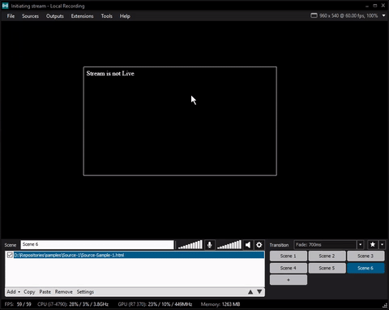
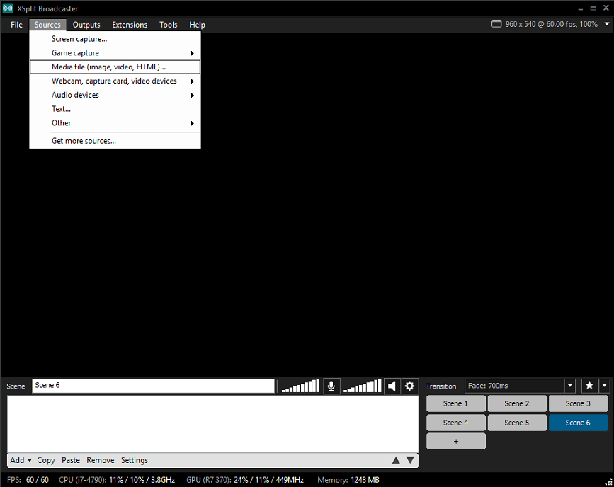
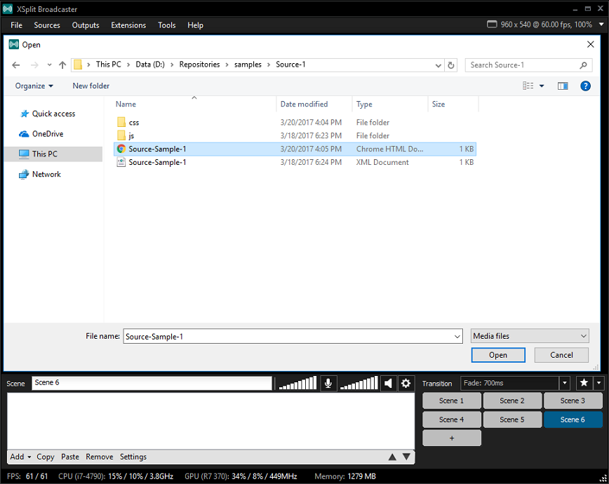
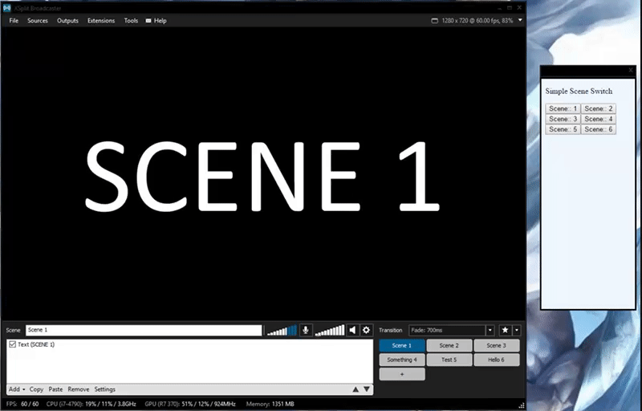
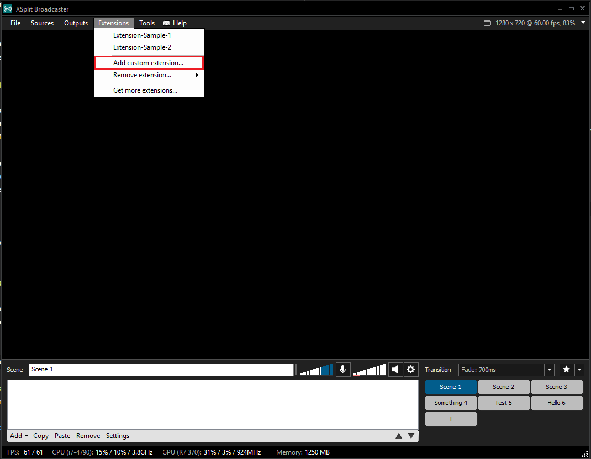
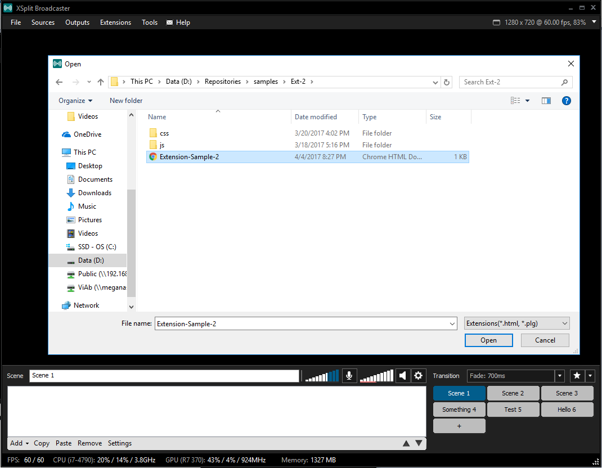

Plugins are important tools for extending the functionality of XSplit Broadcaster. In order to allow developers to create useful plugins for the community, we created the XSplit JS Framework to encapsulate the capabilities of the application in an easy-to-understand manner.
We will walk you through on how to get started building your own XSplit Broadcaster plugin using this framework.
First, you will need the latest official build of XSplit Broadcaster or the Public Test Release version of XSplit Broadcaster to use the XSplit JS Framework. The framework requires minimum XBC version 2.7.1512.2124, unless stated otherwise in the API documentation.
Please note that XSplit Broadcaster PTR version may contain changes that could affect or change the behavior of some methods in the framework.
You can install or start using the framework in a lot of ways, but fastest and the most basic way is to download XSplit JS Framework, add it on your project folder, import it on your html file, and you are good to go.
Outlined below are simple demonstrations on how you can use the framework in creating your own Source or Extension plugin.
What is a Source plugin? Source plugins are objects that may be added to your presentation to be included in your streams and recordings.
The image below is an example of a source plugin. This in particular, changes text once you start/stop a stream or recording.

Let's build this plugin step by step! This example would need to use the ChannelManager class of the framework to listen for the stream-start and stream-end events from XSplit Broadcaster.
<html>
<head>
<link rel="stylesheet" href="css/style.css">
</head>
<body>
<div id="stream-status">
Stream is not Live
</div">
<script src="js/xjs.js"></script>
<script src="js/main.js"></script>
</body>
</html>
You can see above that we have set up an initial html file that imports the framework.
We have also created a <div> that contains the initial text when the stream is not yet live/recording. This text should change immediately when the stream starts.
Next, let's use the framework through our main.js file.
var xjs = require('xjs');
xjs.ready().then(function() {
xjs.ChannelManager.on('stream-start', function() {
document.getElementById('stream-status').innerHTML = 'Stream is Live';
});
xjs.ChannelManager.on('stream-end', function() {
document.getElementById('stream-status').innerHTML = 'Stream is not Live';
});
})
* We're assuming that you are knowledgeable with Promises in JavaScript. If you are not, please do check it out on MDN or other articles about Promise programming.
First, the framework is loaded and saved into the xjs variable. We would then access the framework's ready() method; a method that returns a promise,
which resolves when XSplit JS Framework is ready to use. Always make sure your app checks when the framework is ready before it starts to use the framework!
Let's dissect the code further...
XSplit Broadcaster emits the stream-start and stream-end events through the ChannelManager class.
xjs.ChannelManager.on('stream-start', ...)
xjs.ChannelManager.on('stream-end', ...)
Here, we include a handler for when your stream has started/stopped. For our sample plugin, we can just change the text of the appropriate <div>.
function() {
document.getElementById('stream-status').innerHTML = 'Stream is not Live/Live';
}
And then, you can create a CSS file and update how your plugin would look like. For this example, I set the background-color as transparent for it to blend in with the scene and only the text would be visible. (By default, text color is black.)
body {
background-color: transparent;
color: white;
}
Once, you are done with all of this, you would have to add and test your plugin. You can simply drag the index.html file to the stage or add it as a media file:
 
And there you have it, your very first Source Plugin!
For more information about Sources and other things you can do with them (such as applying a Custom Configuration Object), please check the Developing Sources tutorials page.
What is an Extension? Extension plugins are tools that you can use to do different kinds of tasks to manipulate the XSplit Broadcaster application itself. Seen below is a sample scene switching extension, followed by a step-by-step guide to make it.

Much like how Source Plugins are created, extensions also require an HTML file. For this one, we'll be creating an extension plugin that would load up all the scenes, creating buttons for each of them that allows you to switch to that scene.
<html>
<head>
<meta charset="utf-8">
</head>
<body>
<p>Sample Scene Switch</p>
<div id='scene-id'>
</div>
<script src="js/xjs.js"></script>
<script src="js/main.js"></script>
</body>
</html>
In the above html, we will append the scene buttons to thescene-id element. Let's check out what we need to do in main.js.
var xjs = require('xjs');
xjs.ready()
.then(function() {
return xjs.Scene.getSceneCount();
}).then(function(count) {
for(let i = 1; i < count + 1; i++) {
xjs.Scene.getById(i).then(function(scene) {
var newElement = document.createElement('BUTTON');
var t = document.createTextNode('Scene:: '+ i);
newElement.appendChild(t);
document.getElementById('scene-id').appendChild(newElement);
newElement.addEventListener('click', function() {
xjs.Scene.setActiveScene(scene);
});
});
}
});
Now, let's dissect the sample code above.
XSplit Broadcaster can have any number of scenes and we can get the current number using getSceneCount.
.then(function() {
return xjs.Scene.getSceneCount();
})
With the scene count, we then loop through the scenes and create buttons for each one of them.
xjs.Scene.getById(i).then(function(scene) {
var newElement = document.createElement('BUTTON');
var t = document.createTextNode('Scene:: '+ i);
newElement.appendChild(t);
document.getElementById('scene-id').appendChild(newElement);
});
After assigning each instance of Scene with a button, we also add a click event listener on them. To change scenes, we can pass the desired Scene object into setActiveScene().
newElement.addEventListener('click', function(){
xjs.Scene.setActiveScene(scene);
});
Once this is all done, you can now add your extension to XSplit Broadcaster. Navigate to the extensions menu to add a custom extension and add your HTML file.
 
You will then see it on the Extensions menu. Click on your extension to open it in a separate window.
And there you have it! An extension plugin that contains all your scenes and can also switch scenes.
For more information on the things you can do with Extensions, you can read more about it on Developing Extension Plugins tutorials page.
Here are some more sample snippets you can check out to get a better idea of how the framework might be used. Many of these will work only in extensions.
xjs.Dialog.createDialog('https://www.xsplit.com/')
.setSize(300, 300)
.setTitle('This is a sample dialog')
.setBorderOptions(true, false)
.setButtons(true, true)
.show();
});
Dialog class is used to spawn new browser processes that can be used to open other URLs. Source plugins do not have this functionality (but their source properties windows may use this.)
View more information about the Dialog class on its Dialog API page.
button1.addEventListener('click', function(){
stream.startBroadcast();
});
button2.addEventListener('click', function(){
stream.stopBroadcast();
});
* stream is an instance of Output that you can get using Output.getOutputList()
The Output class provides methods to start and stop a stream/recording, and to pause or unpause a Local Recording.
View more information about the Output class on its Output API page.
if (sources[0] instanceof xjs.MediaSource) {
playBtn.addEventListener('click', function(){
sources[0].setPlaying(true);
});
pauseBtn.addEventListener('click', function(){
sources[0].setPlaying(false);
});
}
* sources is an instance of a Source that you can get using scene.getSources().
The MediaSource class represents the media sources (such as video) that has been added to the stage.
View more information about the MediaSource Class on its MediaSource API page.
We highly suggest you check our API to further explore the things you can do using the framework. Here, you can see more detailed information about the classes and methods that we've used in the examples and all the other ones you can still use in the future. We are constantly adding features to our framework and the best place to read more about them is here.
You can also go ahead and check the Tutorials section to learn more about specific use cases, as well as advanced stuff you do with xjs framework. There are also more plugin examples there that you might be interested in checking and may find useful.
There are also other guides on the tutorials section about the common errors that you may encounter and debugging tips that you may find useful while you create your own plugin.
The XSplit Broadcaster App has a Plugin Store that already have loads of plugins that you can download and use for free at our Plugin Store, and we make a constant effort to make new ones to provide you with the needed tools to make your streams and recordings have the elements that you need.
You may have ideas of your own or have found a bug on the framework. We have an incredible community of developers who are passionate about solving problems and want to listen to your ideas. For this, you could send us some questions or suggestions at Github or directly chat with us on Gitter.
We hope to hear from you and would love to check out the plugins you've created.
Here are a couple of sample plugins that showcases what you can actually do using XSplit JS Framework. You could check out the source code to get a better understanding on how the plugin works.
This plugin demonstrates what you can do on Extension plugins. The Scene Rotator plugin would automatically switch to the specified scenes after the given interval. Please do check out the source code at github.
This plugin demonstrates what you can do on Source plugins, specifically on how source plugins modify other item sources' properties. The Source Toggler plugin would allow the user to attach two other sources and then modify its position and rotation properties. Please do check out the source code at github.
This plugin demonstrates a different take on doing plugins. This involves injecting custom javascript and css to style and add configurability to an already existing webpage. Please do check out the source code at github.